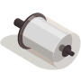
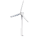
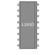
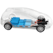

El motor CC es económico y accesible. Puede girar en sentido horario y antihorario, depende mucho para que lado necesitaremos realizar la rotación. Podemos programar relojes, carritos, etc.

Para simular el recorrido del motor de un generador eólico como ejercicio en el tinkercad necesitaremos; un motor CC, un arduino uno, un puente H (En el tinkercad aparece con las letras L293D), una pila de 9v y cables.

Node MCU - 3230 / cuenta con 16 pines entre ellos; 2 Enable de motores, 4 controles de motores (Input), 2 Pines (M2), 4 GND (Tierra), Un pin de +5V Arduino (Pin de alimentación), Un pin de V+ Batería (Pin de alimentación positivo).
Lista que falto comprar / Clase presencial
Jumper hembra y macho (Paquete de 30 cm), cable calibre 22 estañado (5 metros), dos pulsadores, tres resistencias, una placa Node MCU - 3230 ESP32.

Información adicional: Los motores de combustión de los vehículos cuentan con su propia batería, la cual es recargada durante el recorrido.